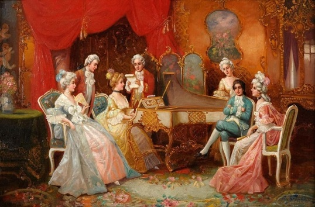
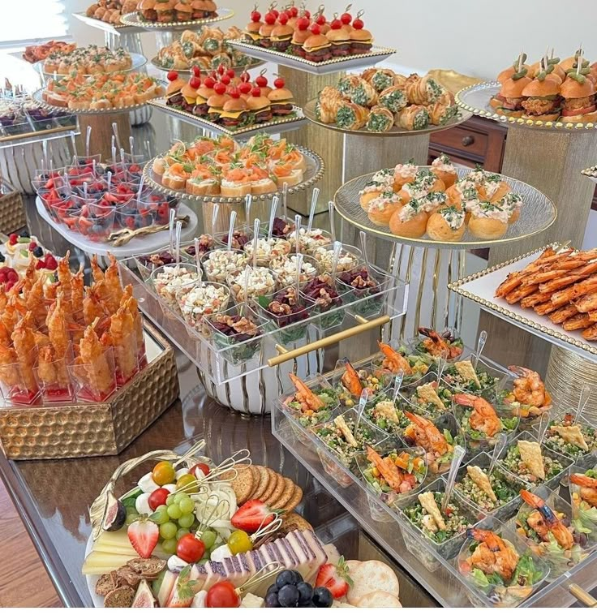
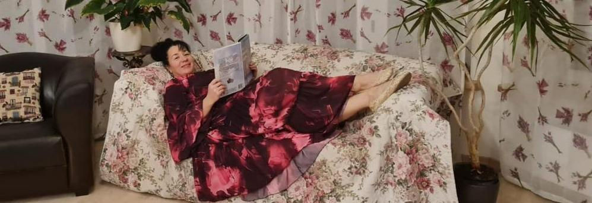

В этот вечер соберутся друзья и единомышленники, объединённые единым стремлением к Прекрасному. Мы прочтём друг другу любимые произведения, оживим в памяти забытые строки, позволим слову вновь обрести силу. И, разделив эмоции и откровения, создадим атмосферу истинного духовного единства, подобающую лучшим традициям литературных салонов.
Ждем всех 27 декабря 2025 года в 17-00 в имении "Veсpidiņi".
P.S. Madame Irin и Monsieur Igor выражают надежду на своевременное прибытие гостей.

Хозяева салона объявляют новые утончённые традиции. В нашем доме не будет места суетливой возне на кухне и шумным приготовлениям. Каждый гость прибывает с уже приготовленными и изящно нарезанными закусками — достойными немедленной подачи к столу. Пусть всё будет эстетично, изысканно и удобно: маленькие угощения, которые можно взять рукой и вкушать без лишних хлопот, сохраняя лёгкость беседы и благородство атмосферы истинного литературного салона. Напитки каждый пришедший выбирает и приносит для себя сам.

Дамы приглашаются в нарядах, приближённых к вечерним — строгих и изысканных, выдержанных в спокойных тонах. Платья должны подчёркивать грацию и утончённость, создавая атмосферу благородного собрания. Мужчины — в костюмах, рубашках и пиджаках, аккуратных и строгих, соответствующих духу салона. Просьба выбрать мягкую обувь, соответствующую наряду, дабы поступь была чуть слышна по паркету. Каждый образ должен быть гармоничным, элегантным и уместным, чтобы гости вместе создавали общее впечатление изысканности и вкуса.